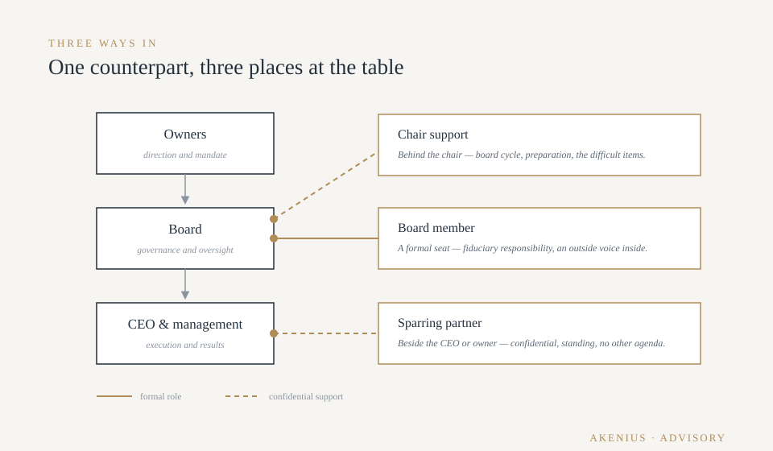
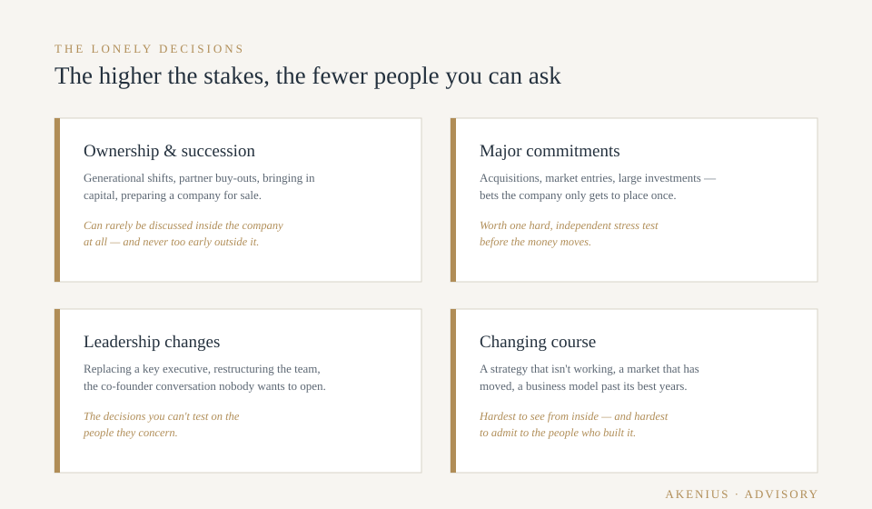
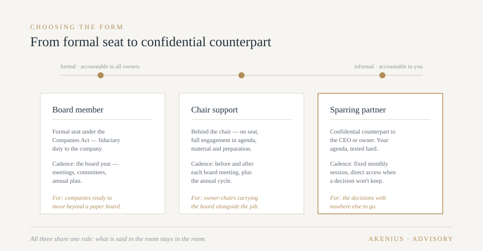

The counterpart every difficult decision deserves.
Owners and CEOs rarely lack information. What's scarce is an experienced counterpart — someone to test the difficult decisions against before they're made.
We serve as board member, chair support or standing sparring partner, bringing governance experience from Nordic boards and the perspective of someone who has sat on the operating side of the table.
Where we deliver value
One counterpart, three places at the table
The same experience plugs in wherever it's most useful — a formal seat, quiet support behind the chair, or a confidential counterpart beside the CEO.

As board member
Many owner-led companies run for years with a paper board — the legal minimum, no outside voice. It works until it doesn't: a major investment, a succession question, a bank that wants to see real governance, a market shift nobody in the room has lived through before.
An external board member changes the nature of the board meeting. Questions get asked that insiders have stopped asking. Decisions get documented, followed up and owned. And the owner gains something rare: a fiduciary counterpart whose only agenda is the company's long-term value.
We take board seats where we can contribute beyond attendance — in companies whose commercial challenges we recognise from having run them. Governance experience from Nordic boards, including Kemp & Lauritzen A/S in Denmark, with the working discipline that experience taught.
As chair support
The chair carries the board — agenda, preparation, the balance between owners and management, the quality of the decisions that leave the room. In smaller companies the chair is often an owner doing it alongside everything else, with no one to calibrate against.
We work behind the chair: shaping the annual board cycle, sharpening the material before meetings, preparing the difficult items — and being the person the chair can think out loud with before taking a position. Quiet work, visible results: shorter meetings, better decisions, fewer surprises.
As standing sparring partner
The top job has a structural flaw: the more consequential the decision, the fewer people you can discuss it with. Leadership changes, ownership questions, a strategy you're no longer sure of — these can't be tested on your management team, and often not on your board either.
A standing sparring relationship gives you a confidential counterpart with no stake in the outcome except your judgement improving. A fixed monthly rhythm for the running agenda; available between sessions when something can't wait. We ask the questions a subordinate won't and a consultant with a follow-on sale in mind can't afford to.

Why an experienced counterpart
Why companies choose it
Decisions improve before they're made
The cheapest place to catch a mistake is before it's committed. A counterpart who has carried P&L responsibility stress-tests a decision differently than an adviser who has only analysed one.
The operating perspective at the governance table
Board experience is common; board members who have recently run businesses are less so. We know what a management team can actually absorb, what a forecast is worth, and which board requests create work without creating value.
Governance that adds credibility
Banks, investors, acquirers and key recruits all read the board. A functioning board with an external member signals a company run for the long term — often at exactly the moment that signal matters most.
A rhythm that creates discipline
A standing counterpart — board seat or sparring — creates a cadence of accountability: decisions revisited, commitments followed up, drift caught early. Most owners underestimate how much this alone is worth.
Continuity across situations
The same counterpart who knows your business in calm weather is far more valuable in a storm. Advisory relationships compound; their value grows with every quarter of shared context.
Independence you can trust
We hold few positions at a time, take no seat where we can't contribute, and have no services bench waiting behind the advice. When we recommend bringing in help — ours or anyone's — you'll know it's the judgement talking.
Choosing the form
From formal seat to confidential counterpart

Board assignments follow the company's formal cycle: the annual board plan, scheduled meetings, committee work where relevant, and availability between meetings for matters that can't wait for the next one.
Chair support and sparring run on a standing monthly rhythm — a fixed session with a running agenda you control — plus direct access when a decision won't keep. Engagements are annual, reviewed openly each year: if the value isn't obvious, neither of us should continue.
Everything discussed stays in the room. That's not a policy; it's the precondition for the whole arrangement working.
Why Akenius
The governance side, without forgetting the other side
25+ years of Nordic industry leadership, P&L ownership across Nordic markets, and board experience including Kemp & Lauritzen A/S (Denmark) — combined with current, active operating work. We sit on the governance side of the table without forgetting what the other side feels like.
The best decision you'll make this year might be the one you tested first.